<!DOCTYPE html>
<html lang='ja'>
<head>
	<meta charset='UTF-8' name='viewport' content='width=device-width, initial-scale=1, maximum-scale=1, user-scalable=no'>
	<meta name="description" content='2021年7月熱海市土砂災害をマップにしました。'>
	<meta property="og:title" content="2021年7月熱海市土砂災害可視化マップ" />
	<meta property="og:type" content="website" />
	<meta property="og:image" content="https://dpnote.netlify.app/images/post/20210706atami.png" />
	<meta property="og:description" content="2021年7月熱海市土砂災害をマップにしました。" />
	<meta name="twitter:card" content="summary_large_image">
	<meta name="twitter:title" content="2021年7月熱海市土砂災害可視化マップ" />
	<meta name="twitter:description" content='2021年7月熱海市土砂災害をマップにしました。' />
	<meta name="twitter:image" content="https://dpnote.netlify.app/images/post/202107atami.png" />
	<meta name="author" content="仁志">
	<meta name="keywords" content="防災、災害対策">
	<link rel="stylesheet" href="https://unpkg.com/leaflet@1.7.1/dist/leaflet.css" />
	<script src="https://unpkg.com/leaflet@1.7.1/dist/leaflet.js"></script>
	<link rel="stylesheet" href="https://use.fontawesome.com/releases/v5.0.13/css/all.css" integrity="sha384-DNOHZ68U8hZfKXOrtjWvjxusGo9WQnrNx2sqG0tfsghAvtVlRW3tvkXWZh58N9jp" crossorigin="anonymous">
	<link rel="stylesheet" href="https://cdnjs.cloudflare.com/ajax/libs/Leaflet.awesome-markers/2.0.2/leaflet.awesome-markers.css" integrity="sha512-cUoWMYmv4H9TGP4hbm1mIjYo90WzIQFo/5jj+P5tQcDTf+iVR59RyIj/a9fRsBxzxt5Dnv/Ex7MzRIxcDwaOLw==" crossorigin="anonymous" referrerpolicy="no-referrer" />
	<script src="https://cdnjs.cloudflare.com/ajax/libs/Leaflet.awesome-markers/2.0.2/leaflet.awesome-markers.min.js" integrity="sha512-8BqQ2RH4L4sQhV41ZB24fUc1nGcjmrTA6DILV/aTPYuUzo+wBdYdp0fvQ76Sxgf36p787CXF7TktWlcxu/zyOg==" crossorigin="anonymous" referrerpolicy="no-referrer"></script>
	
	<script src="https://code.jquery.com/jquery-2.2.4.min.js" integrity="sha256-BbhdlvQf/xTY9gja0Dq3HiwQF8LaCRTXxZKRutelT44=" crossorigin="anonymous"></script>
	
	<link rel="stylesheet" href="https://cdnjs.cloudflare.com/ajax/libs/lightbox2/2.11.3/css/lightbox.css" integrity="sha512-Woz+DqWYJ51bpVk5Fv0yES/edIMXjj3Ynda+KWTIkGoynAMHrqTcDUQltbipuiaD5ymEo9520lyoVOo9jCQOCA==" crossorigin="anonymous" referrerpolicy="no-referrer" />
	<script src="https://cdnjs.cloudflare.com/ajax/libs/lightbox2/2.11.3/js/lightbox.min.js" integrity="sha512-k2GFCTbp9rQU412BStrcD/rlwv1PYec9SNrkbQlo6RZCf75l6KcC3UwDY8H5n5hl4v77IDtIPwOk9Dqjs/mMBQ==" crossorigin="anonymous" referrerpolicy="no-referrer"></script>
	
	<!-- Google tag (gtag.js) -->
	<script async src="https://www.googletagmanager.com/gtag/js?id=G-MPP84V2NHB"></script>
	<script>
		window.dataLayer = window.dataLayer || [];
		function gtag(){dataLayer.push(arguments);}
		gtag('js', new Date());

		gtag('config', 'G-MPP84V2NHB');
	</script>
	
	<script src='atamidata/tochi.geojson'></script>
	
	<style>
		html,body,#map{margin: 0;padding: 0;width: 100%;height: 100%;}
		
	</style>

	<script>
		function ini(){

			const osm = L.tileLayer('https://{s}.tile.openstreetmap.org/{z}/{x}/{y}.png', {
				attribution: '&copy; <a href="http://osm.org/copyright" target="_blank">OpenStreetMap</a> contributors<br>出典：国土地理院、<a href="https://www.gsi.go.jp/BOUSAI/R3_0701_heavyrain.html" target="_blank">令和3年(2021年)7月1日からの大雨に関する情報</a>を加工・編集して作成'
			});
			
			const tiri = L.tileLayer('https://cyberjapandata.gsi.go.jp/xyz/std/{z}/{x}/{y}.png', {
				attribution: '&copy; <a href="http://maps.gsi.go.jp/development/ichiran.html" target="_blank">地理院タイル</a><br>出典：国土地理院、<a href="https://www.gsi.go.jp/BOUSAI/R3_0701_heavyrain.html" target="_blank">令和3年(2021年)7月1日からの大雨に関する情報</a>を加工・編集して作成'
			});
			
			const hyoko = L.tileLayer('https://cyberjapandata.gsi.go.jp/xyz/relief/{z}/{x}/{y}.png', {
				attribution: '&copy; <a href="http://maps.gsi.go.jp/development/ichiran.html" target="_blank">地理院タイル</a><br>海域部は海上保安庁海洋情報部の資料を使用して作成<br>出典：国土地理院、<a href="https://www.gsi.go.jp/BOUSAI/R3_0701_heavyrain.html" target="_blank">令和3年(2021年)7月1日からの大雨に関する情報</a>を加工・編集して作成'
			});

			const atami = new L.tileLayer('https://cyberjapandata.gsi.go.jp/xyz/20210705oame_0706do/{z}/{x}/{y}.png');
			const map = L.map('map', {center: [35.115784, 139.079018], zoom: 16,layers: [osm, atami], minZoom: 14, maxZoom: 18});
			
			options1 = {
				prefix: 'fa'
				,icon: 'video'
				,markerColor: 'red'
			};

			L.marker([35.120909,139.073610], {icon: L.AwesomeMarkers.icon(options1)}).addTo(map).bindPopup('YouTube動画<br><iframe width="300" height="315" src="https://www.youtube.com/embed/j_pkRvqx6SY" title="YouTube video player" frameborder="0" allow="accelerometer; autoplay; clipboard-write; encrypted-media; gyroscope; picture-in-picture" allowfullscreen></iframe>');
			
			options2 = {
				prefix: 'fa'
				,icon: 'camera-retro'
				,markerColor: 'green'
			};
			
			L.marker([35.108315,139.092493], {icon: L.AwesomeMarkers.icon(options2)}).addTo(map).bindPopup('斜め写真（タップで拡大表示）<br><a href="atamidata/GSI_6783.jpg" data-lightbox="image-1" data-title="GSI_6783">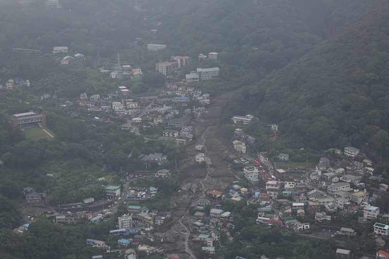</a>');

			L.marker([35.118031,139.078867], {icon: L.AwesomeMarkers.icon(options2)}).addTo(map).bindPopup('斜め写真（タップで拡大表示）<br><a href="atamidata/GSI_6918.jpg" data-lightbox="image-1" data-title="GSI_6918">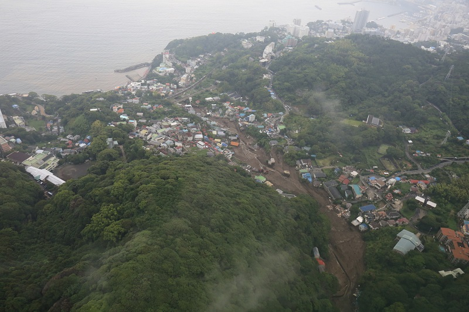</a>');

			L.marker([35.115292,139.075842], {icon: L.AwesomeMarkers.icon(options2)}).addTo(map).bindPopup('斜め写真（タップで拡大表示）<br><a href="atamidata/GSI_6900.jpg" data-lightbox="image-1" data-title="GSI_6900">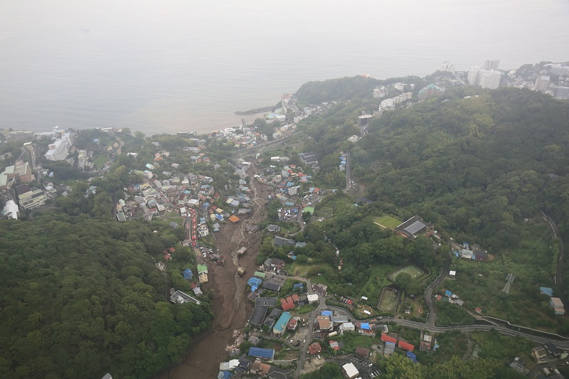</a>');

			L.marker([35.112818,139.073288], {icon: L.AwesomeMarkers.icon(options2)}).addTo(map).bindPopup('斜め写真（タップで拡大表示）<br><a href="atamidata/GSI_6920.jpg" data-lightbox="image-1" data-title="GSI_6920">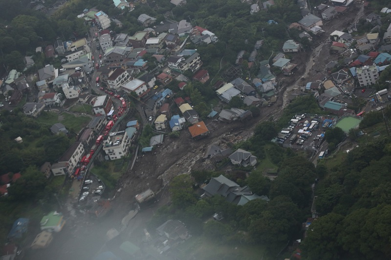</a>');

			L.marker([35.118943,139.080563], {icon: L.AwesomeMarkers.icon(options2)}).addTo(map).bindPopup('斜め写真（タップで拡大表示）<br><a href="atamidata/GSI_6924.jpg" data-lightbox="image-1" data-title="GSI_6924">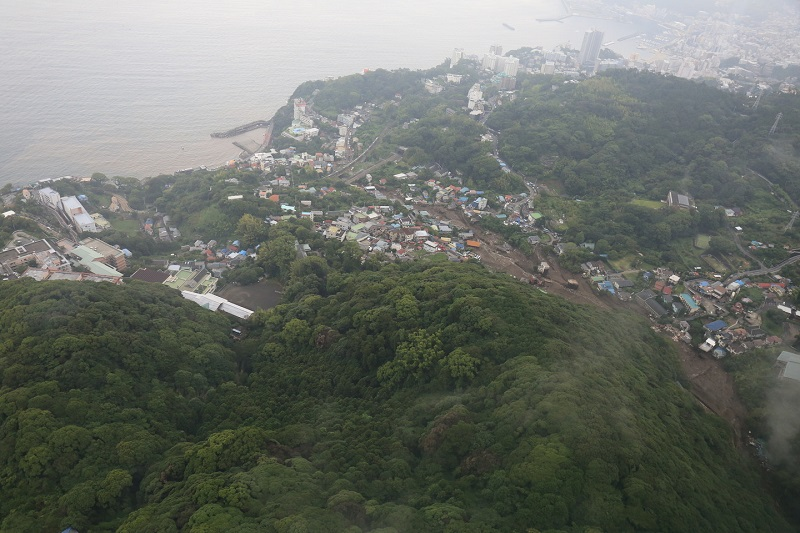</a>');

			L.marker([35.111343, 139.095154], {icon: L.AwesomeMarkers.icon(options2)}).addTo(map).bindPopup('斜め写真（タップで拡大表示）<br><a href="atamidata/GSI_6464.jpg" data-lightbox="image-1" data-title="GSI_6464">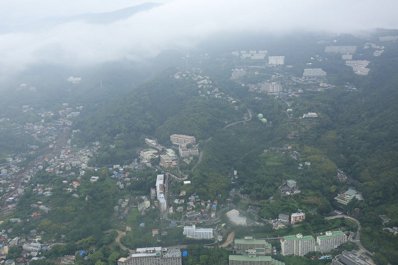</a>');

			L.marker([35.111115, 139.092504], {icon: L.AwesomeMarkers.icon(options2)}).addTo(map).bindPopup('斜め写真（タップで拡大表示）<br><a href="atamidata/GSI_6782.jpg" data-lightbox="image-1" data-title="GSI_6782"></a>');

			L.marker([35.108605, 139.090261], {icon: L.AwesomeMarkers.icon(options2)}).addTo(map).bindPopup('斜め写真（タップで拡大表示）<br><a href="atamidata/GSI_6792.jpg" data-lightbox="image-1" data-title="GSI_6792">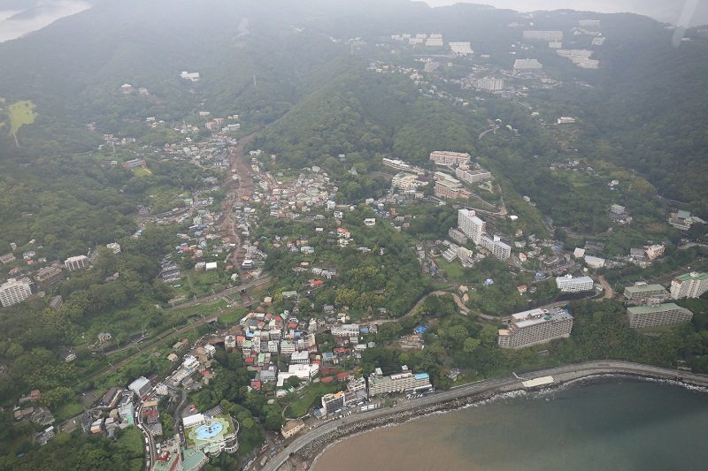</a>');

			L.marker([35.106130,139.088137], {icon: L.AwesomeMarkers.icon(options2)}).addTo(map).bindPopup('斜め写真（タップで拡大表示）<br><a href="atamidata/GSI_6806.jpg" data-lightbox="image-1" data-title="GSI_6806">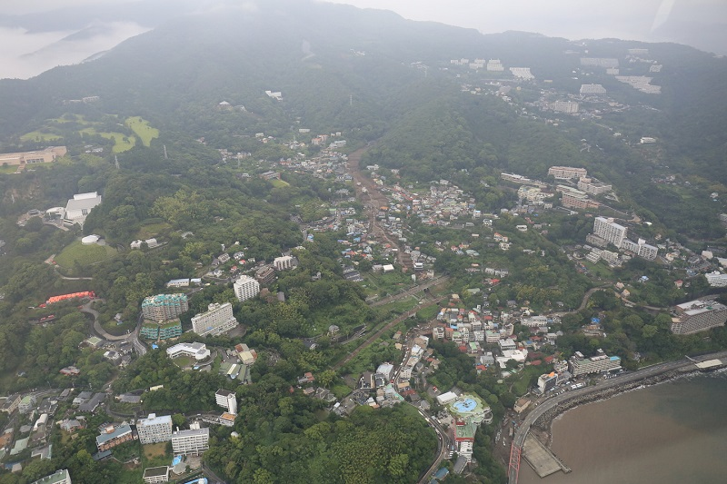</a>');

			L.marker([35.112756,139.098909], {icon: L.AwesomeMarkers.icon(options2)}).addTo(map).bindPopup('斜め写真（タップで拡大表示）<br><a href="atamidata/GSI_6964.jpg" data-lightbox="image-1" data-title="GSI_6964">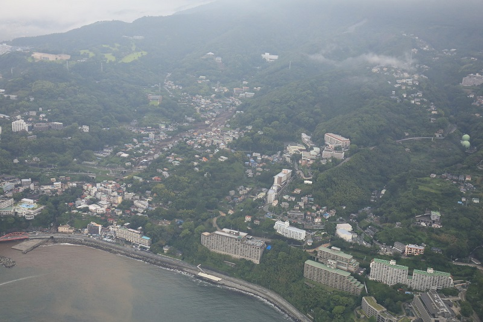</a>');

			L.marker([35.103900,139.087815], {icon: L.AwesomeMarkers.icon(options2)}).addTo(map).bindPopup('斜め写真（タップで拡大表示）<br><a href="atamidata/GSI_6532.jpg" data-lightbox="image-1" data-title="GSI_6532">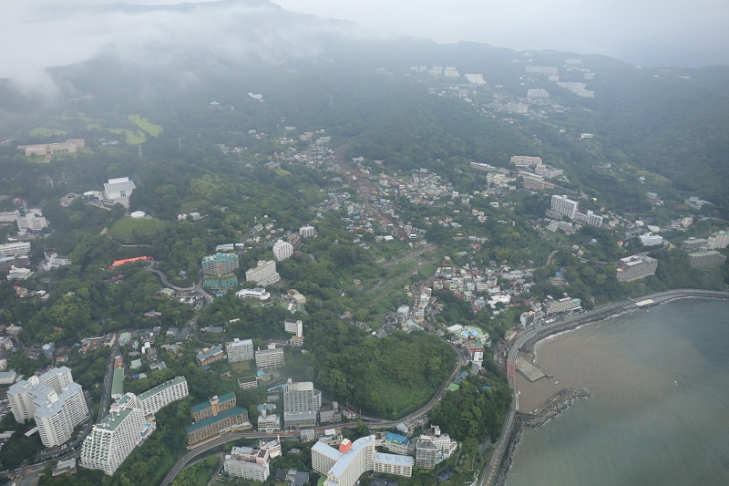</a>');

			L.marker([35.107253,139.094682], {icon: L.AwesomeMarkers.icon(options2)}).addTo(map).bindPopup('斜め写真（タップで拡大表示）<br><a href="atamidata/GSI_6424.jpg" data-lightbox="image-1" data-title="GSI_6424">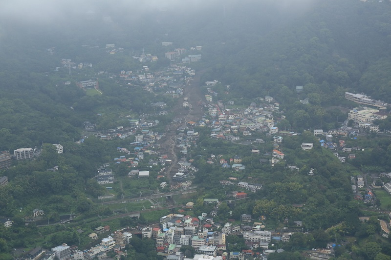</a>');

			const tochi1 = L.geoJSON(tochi).addTo(map);
			
			const baseMaps = {"OpenStreetMap": osm, "地理院地図": tiri, "色別標高図": hyoko};
			
			const addMaps = {"航空写真": atami, "崩壊地等分布図": tochi1}
			
			L.control.layers( baseMaps, addMaps).addTo(map);

			
		}
		
	</script>

	<title>2021年7月熱海市土砂災害可視化マップ</title>

</head>
<body onLoad='ini()'>
	<div id='map'></div>

</body>
</html>